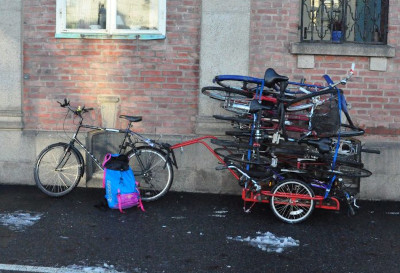

Cykelköket Göteborg
Gör-det-själv-verkstad för alla som behöver laga eller serva sin cykel.
Nyheterna
Cykelköket Göteborg är stängt under vintern. Det är för mörkt och för dåligt väder för att laga cyklar ute, vi ses på våren! Vi öppnar igen den 31 mars.
Praktisk information
Cykelköket Göteborg är stängt under vintern. Vi öppnar igen den 31 mars.Adress: Södra Frihamnspiren 15, 417 70 Göteborg
Öppettider: Tisdagar och torsdagar 18:00-20:00
Verkstaden är i den gröna kontainern på Omställningslabbet.
Om Cykelköket
Cykelköket Göteborg är en gör-det-själv-verkstad för alla som behöver laga eller serva sin cykel. Vår ambition är att höja cykelns och cyklandets status, samt fungera som en socialt engagerande mötesplats för cykelintresserade i alla åldrar. Vi håller regelbundet öppet i vår verkstad, samt håller ibland kurser och workshops i cykelmekande. Vi finns på Omställningslabbet i Frihamnen, men har pedaldriven kapacitet att rycka ut och vara med på t.ex. festivaler, företagsevent eller miljömässor.
Folkbildning och kollektivt lärande är centralt i vår verksamhet. Vem som helst, oavsett kunskapsnivå, är välkommen att ta del av och engagera sig i verksamheten. Cykelköket fungerar även som en återvinningscentral för kasserade och övergivna cyklar och cykeldelar. Vi samarbetar t.ex. med hyresvärdar för att samla in cyklar som sedan kan erbjudas som renoveringsobjekt åt den som behöver en cykel.
Ett cykelkök i Göteborg tar form
Under våren 2011 föddes idéen om ett cykelkök i Göteborg i samband med ett evenemang under devisen ”meka ihop din egen klimatsmarta cykel”. Ett antal insamlade cyklar som kasserats under Familjebostäders vårstädning i Majorna och Kungsladugård erbjöds här som renoveringsobjekt åt intresserade. Det mycket uppskattade evenemanget kom till stånd på initiativ av volontärer och cykel-entusiaster engagerade i dialog- och samverkansprojektet Ekologisk Stadsdel Majorna. Bland de medverkande framkastades en idé om att inrätta en permanent gör-det-själv-verkstad och återvinningsställe för cyklar.
I september 2011 lanserades med hjälp av Studiefrämjandet och Omställning Göteborg en studiecirkel med målsättningen att grunda en oberoende filial till Cykelköket i Malmö. Projektet utvecklades under vintern 2011-2012 av en växande skara entusiaster. En i Majornas lokala hyresgästförening upplät en mindre lokal som kommer fungera som bas för verksamheten i en inledande fas. I mars 2012 höll Cykelköket Göteborg sitt första, mycket välbesökta, offentliga evenemang.
Vi har sedan dess flyttat runt lite, på Vegagatan i Linné, på Första Långgatan vid Masthuggstorget och på Medicinaregatan. Sedan våren 2025 finns vi på Omställningslabbet i Frihamnen.
Våra stadgar hittar du här nedan som PDF.
Donera cykel
Vill du skänka cyklar eller prylar?
Vill ni skänka nått användbart till vår verksamhet? Har ni rensat ut gamla cyklar och vet inte vad ni vill göra med dem? Vi tar gärna emot användbart material, bara kom förbi med en låda under våra öppettider och prata med våra köksmästare! Vill ni skänka cyklar så kan vi komma och hämta om det är 5 eller fler, färre än det lämnas i vår lokal! Kontakta oss gärna om det gäller större volymer på cykelkoket@proton.me.
Om ni vill donera cyklar och har möjlighet att ta dem till oss, tar vi emot dem nästan när som helst. Bara mejla för att koordinera att det finns någon på plats som kan ta emot dem på köket. Om ni vill att vi hämtar cyklar, behöver vi veta:
Hur många cyklar handlar det om?
Vilken adress ska vi hämta dem ifrån?
Vem är kontaktperson som vi kan koordinera hämtning med? (+kontaktnummer)
När vi gör en cykelhämtning, brukar det gå till så här:
Vi skriver upp informationen vi får från er i en lista, och så hämtar vi dem när någon av våra volontärer har tid och vi har behov av mer cyklar.
Det kan ta tid innan vi ringer upp för att koordinera en hämtning. Vi kan inte ge exakta datum eller liknande i förväg.
Vi hämtar cyklar med cykelkärra så vi kan ta ungefär 8-12 cyklar åt gången
Tack för all hjälp!

Bli volontär
Hjälp till att hålla Cykelköket öppet – bli köksmästare!
Cykelköket är en ideell organisation som drivs av frivilliga krafter. De som håller köket öppet är våra ”köksmästare”. Du behöver inte kunna mycket om cyklar eller hur man reparerar dem för att bli köksmästare, det handlar snarare om att känna till hur köket fungerar och ta väl hand om våra besökare. Utanför öppettid behövs även hjälp med att hämta cyklar som vi fått skänkta till oss.
Om du vill bli köksmästare går det bra att komma till köket under öppettider och fråga hur du kan hjälpa till. Det går också bra att gå med i vår grupp på Karrot.
Introkurser för nya volontärer hålls då och då. Håll ögonen öppna på våra kanaler för inbjudan. Utbildningen är ca 2 timmar och vi pratar mest om hur föreningen funkar och lite administrativa grejer, men själva mekandet lär man sig bäst efterhand, genom att helt enkelt vara en aktiv volontär. De mer erfarna volontärerna hjälper dig! Beskrivning av vad en volontär kan tänkas göra.
Vad gör en volontär?
- Lära folk att laga cyklar. Inga krav finns dock på tidigare erfarenhet av mekande - vi lär dig gärna!
- Hjälpa våra gäster att bli medlemmar, samt berätta om vàrt uppdrag och hur saker fungerar.
- Känna till reglerna (de kommer att sitta på väggen) för Cykelköket och hjälpa andra att följa dem.
Hur ofta behöver jag dyka upp?
Sả ofta som du vill eller kan. Vissa lever sina liv på Cykelköket, medan andra dyker upp en gàng i månaden, eller mindre. Allt är uppskattat. Och vi har full förståelse om folk ibland har viktigare saker som ska gõras. Sả länge det kommuniceras är det bra!
Övrigt
- Transporter. Vi får donationer av oönskade cyklar, och det är viktigt att koordinera och transportera dessa till vår lokal. Detta sker vanligtvis med cykelkärra.
FAQ
Cykelköket Göteborg är stängt under vintern. Vi öppnar igen den 31 mars. För tillfället har vi öppet tisdag och torsdag 18:00-20:00. Förhoppningsvis kommer vi kunna utöka öppettiderna snart!
Ja, vi brukar hålla öppet trots att det kan vara en helgdag eller röd dag.
Nej, men när du blir medlem får du en cykel som är i behov av reparation. Cykeln som du får, lagar du själv i vår verkstad eller någon annanstans. På Cykelköket lär våra volontärer ut hur du servar och reparerar din cykel.
Under Cykelkökets öppettider kan du bli medlem genom att fylla i ett formulär och betalar med kontanter 50kr eller 100kr (50kr för arbetslösa & studenter och 100kr för dig med jobb). Medlemskapet är årligt.
Observera att vi endast tar emot kontant betalning.
Du får ta en cykel ifrån vårat cykelförråd som brukar innehålla ett antal olika cyklar. Cykeln blir sedan din för all framtid – du behöver alltså inte betala medlemsavgiften nästkommande år för att få behålla den. Om du förnyar ditt medlemskap har du rätt till ännu en cykel från förrådet. Cykeln får du inte sälja, men om du inte behöver den längre kan du lämna tillbaka den eller ge bort den till någon som behöver den.
Utöver cykeln får du även ett klistermärke med Cykelkökets logotyp, samt möjligheten att rösta på årsmötet som brukar ske kring mars – april månad.
Alla cyklar vi får in har olika mängd behov av arbetstid, och vi uppmuntrar dig att inte välja en cykel efter hur pass lite jobb det är med den, utan välj den cykeln som du tycker mest om. Ingen cykel är för svår att laga. Tiden du lägger ner på att lära dig hur allting sitter ihop och fungerar kommer att få dig att uppskatta din cykel mycket mer och gör dig kapabel att behålla den i gott skick väldigt länge.
Hur lång tid det tar att laga en cykel är också såklart omöjligt att svara på, men räkna inte med att nödvändigtvis få cykeln klar första kvällen. Observera att det inte går att förvara cykeln i köket. Köp gärna ett cykellås innan du kommer till Cykelköket så att du kan låsa din cykel i närheten tills nästa tillfälle.
Ja, det finns reservdelar hos oss, både begagnade och några nya. Man kan ta begagnade delar kostnadsfritt, men bara om du monterar den direkt på en cykel som behöver delen.
Det är inte tillåtet att ta loss delar som är monterade på en annan cykel.
Vi tar gärna emot gamla cyklar, reservdelar och tillbehör. Vänligen kolla under avsnittet Donera en cykel.
Bara kom till köket under öppettider. Du är välkommen att bara hänga på köket och lära dig och andra om cykelmekandet, så mycket du vill. Kolla gärna under avsnittet Bli volontär.
Inne i lokalen – nej. Men om du står utomhus – ja. Stör bara ingen som går förbi och stå inte i vägen för andra trafikanter och håll rent och snyggt. Du står för materialet själv
Kontakt
Du kan kontakta oss på cykelkoket@proton.me men det är bäst om du kommer till köket under öppettider och pratar med en volontär.
English summary
Cykelköket Göteborg (The Bike Kitchen Gothenburg) is a do-it-yourself workshop for anyone who needs to repair or service their bicycle. Our ambition is to raise the status of the bicycle and cycling, as well as function as a socially engaging meeting place for cycling enthusiasts of all ages. We are closed for the winter. We reopen on March, 31. We are open on Tuesdays and Thursday 18:00 - 20:00. We are located at Omställningslabbet Södra Frihamnspiren 15, 417 70 Göteborg but have the pedal-powered capacity to move out and participate in e.g. festivals, corporate events or environmental fairs.
We have tools, free second-hand spare parts and volunteers to guide you in the repairs. We do not sell bikes but by becoming a member for 100 kr, with a reduced price for students and unemployed people of 50 kr, you get to choose one of our bikes and fix it. The membership is annual and note that we only accept cash. We gladly take donations of old bikes and bike parts.